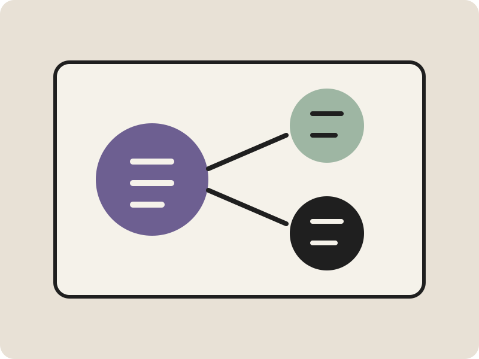

A smaller decision surface
Reduce a broad challenge to the few variables that actually change the outcome.
Professional business consulting
Meridian helps leadership teams clarify priorities, pressure test assumptions, and leave the room with owners, dates, and measurable decisions.
Book a strategy consultation
Meridian turns a complicated buying decision into one clear next action.
Problem to solution
Leadership teams often have enough data but no shared decision framework for growth, operations, and market priorities.
Reduce a broad challenge to the few variables that actually change the outcome.
Separate facts, estimates, constraints, and unresolved questions.
Assign each next action to a person, date, and decision milestone.
Leave with a concise summary that the team can use after the meeting ends.
How it works
The landing page gives the visitor enough context to submit a useful request instead of a vague contact form.
Share the business question, current options, timing, and constraints.
Review assumptions, tradeoffs, risks, and what would change the answer.
Get the decision, next actions, owners, and open items in writing.
Fictional case study
A fictional engagement narrowed six possible markets to two testable segments and assigned a 45 day validation plan.
“The session did not create more strategy slides. It gave us a decision, the reasons behind it, and the work due next.”
Questions before conversion
The FAQ is written in plain question and answer form for visitors and future answer engine markup.
The template covers market selection, service positioning, operating priorities, partnerships, and government contracting readiness.
The fictional offer includes a written summary of the decision, supporting logic, owners, dates, and unresolved items.
The primary offer is a focused consultation. Longer work should only follow when the scope clearly requires it.
Send the decision question, current options, available evidence, known constraints, and the date the decision is needed.
Yes. The production version can define an attendee limit and a structured premeeting questionnaire.
The session should identify what is known, what remains uncertain, and which test would produce the most useful evidence.
Primary action
Book a focused consultation. The demo includes a clear intake flow and written confirmation state.
No obligation. Fictional demo form. Connect a secure production form service before launch.